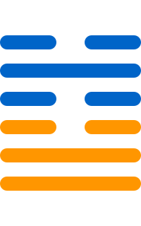

第六十卦
节卦

卦辞
亨。苦节不可贞。
节卦象征节制、限制与节约。卦辞意为：亨通。苦节不可坚守正道。节卦教导我们要适度节制，不要过度。
彖传
节，亨，刚柔分，而刚得中。苦节不可贞，其道穷也。说以行险，当位以节，中正以通。天地节而四时成，节以制度，不伤财，不害民。
彖传说：节，亨，刚柔分，而刚得中。苦节不可贞，其道穷也。说以行险，当位以节，中正以通。天地节而四时成，节以制度，不伤财，不害民。
象传
水上有泽，节。君子以制数度，议德行。
象传说：水上有泽，就是节卦。君子应当效法这种精神，制数度，议德行。水上有泽，象征节制的力量。
爻辞
初九：不出户庭，无咎
不出户庭，无灾害。
初九爻位于最下方，不出户庭。不出户庭，无咎，表示节制的开始。
九二：不出门庭，凶
不出门庭，凶险。
九二爻得中，不出门庭。不出门庭，凶，表示过度节制。
六三：不节若，则嗟若，无咎
不节若，则嗟若，无灾害。
六三爻位置不当，不节若。不节若，则嗟若，无咎，表示不节制之叹。
六四：安节，亨
安节，亨通。
六四爻接近君位，安节。安节，亨，表示安于节制。
九五：甘节，吉，往有尚
甘节，吉祥，前往有尚。
九五爻居中尊位，甘节。甘节，吉，往有尚，表示甘于节制。
上六：苦节，贞凶，悔亡
苦节，坚守正道凶险，悔恨消亡。
上六爻位于极点，苦节。苦节，贞凶，悔亡，表示过度节制。